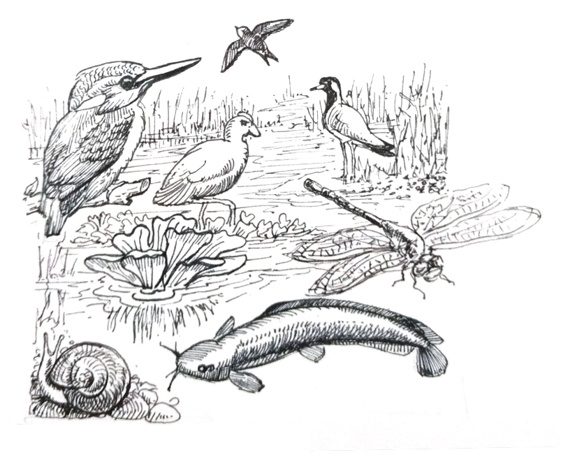
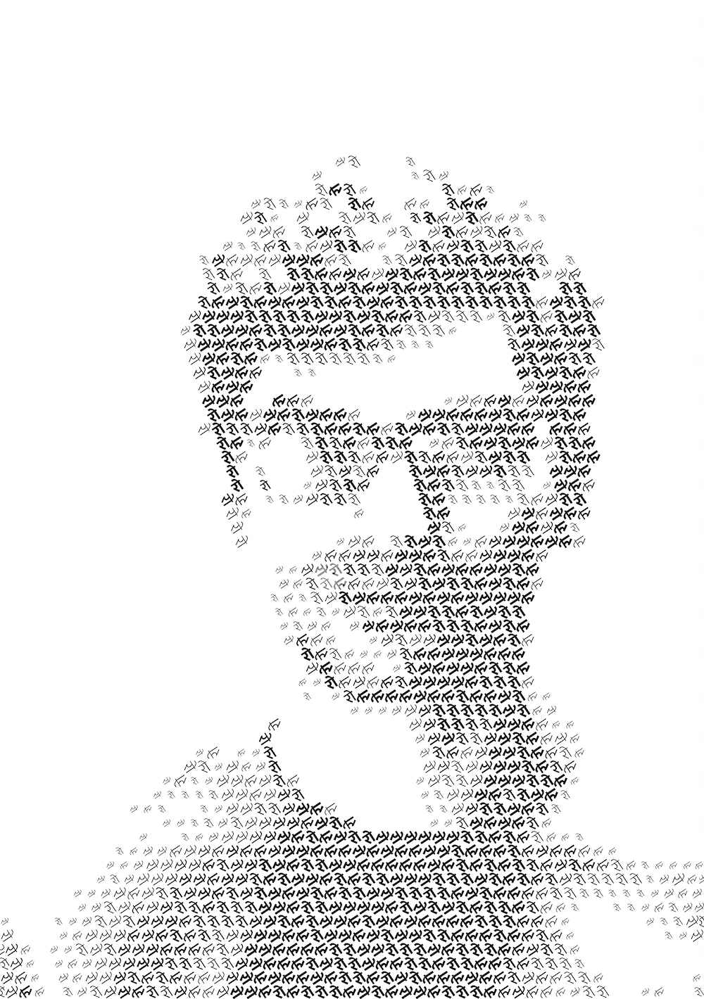

The project with CEE and Pune Municipal Corporation involved two parts: creating community engagement around the lake and a self-guided trail experience.

A card set was prototyped for visitors to use on their walks with questions and clues related to different spots along the trail.
With information from reference books and websites, the card set was made with children in mind to be engaging and easy to understand.

Illustrations were made to communicate information about the ecosystem to encourage visitors to observe their environment more closely.
Marathi poster to invite community participation at the lake. The project included a campaign to involve the people visiting the lake in the development of the trails.

next project:
sustainability inforgraphics
sustainability inforgraphics